Expenses¶
Odoo Expenses streamlines the management of expenses. After an employee submits their expenses in Odoo, the expenses are reviewed by management and accounting teams. Once approved, payments can then be processed and disbursed back to the employee for reimbursement(s).
Set expense categories¶
The first step to track expenses is to configure the different types of expenses for the company (managed as expense categories in Odoo). Each category can be as specific or generalized as needed. Go to to view the current expensable categories in a default list view.
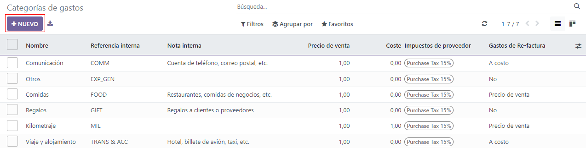To create a new expense category, click New. A product form will appear, with the description field labeled Product Name.
Note
Expense categories are managed like products in Odoo. The expense category form follows the standard product form in Odoo, and the information entered is similar. Expense products will be referred to as expense categories throughout this document since the main menu refers to these as Expense Categories.
Only two fields are required, the Product Name and the Unit of Measure. Enter the Product Name in the field, and select the Unit of Measure from the drop-down menu (most products will be set to Units).
Tip
The Sales app is where specification on the units of measure are created and edited (e.g.
units, miles, nights, etc.). Go to and
ensure Units of Measure is enabled in the Product Catalog section. Click on the
Units of Measure internal link to view, create, and edit the units of measure.
The Cost field on the product form is populated with a value of 0.00 by default. When
a specific expense should always be reimbursed for a particular price, enter that amount in the
Cost field. Otherwise, leave the Cost set to 0.00, and employees will
report the actual cost when submitting an expense report.
Note
The Cost field is always visible on the expense category form, but the Sales Price field is only visible if the Sales Price is selected under the Re-Invoice Expenses section. Otherwise, the Sales Price field is hidden.
Example
Here are some examples for when to set a specific Cost on a product vs. leaving the
Cost at 0.00:
Meals: Set the Cost to
0.00. When an employee logs an expense for a meal, they enter the actual amount of the bill and will be reimbursed for that amount. An expense for a meal costing $95.23 would equal a reimbursement for $95.23.Mileage: Set the Cost to
0.30. When an employee logs an expense for “mileage”, they enter the number of miles driven in the Quantity field, and are reimbursed 0.30 per mile they entered. An expense for 100 miles would equal a reimbursement for $30.00.Monthly Parking: Set the Cost to
75.00. When an employee logs an expense for “monthly parking”, the reimbursement would be for $75.00.Expenses: Set the Cost to
0.00. When an employee logs an expense that is not a meal, mileage, or monthly parking, they use the generic Expenses product. An expense for a laptop costing $350.00 would be logged as an Expenses product, and the reimbursement would be for $350.00.
Select an Expense Account if using the Odoo Accounting app. It is recommended to check with the accounting department to determine the correct account to reference in this field as it will affect reports.
Set a tax on each product in the Vendor Taxes and Customer Taxes fields, if applicable. It is considered good practice to use a tax that is configured with Tax Included in Price. Taxes will be automatically configured if this is set.
To add an internal reference on an expense category, click on the category to open the form. Enter the internal reference in the field. Beneath the Internal Reference field, this sentence appears: Use this reference as a subject prefix when submitting by email.
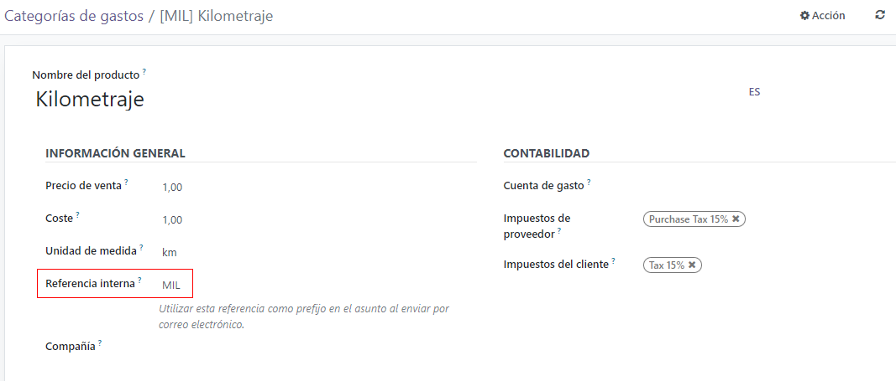Record expenses¶
Manually create a new expense¶
To record a new expense, begin in the main app dashboard, which presents the default My Expenses view. This view can also be accessed from .
First, click New, and then fill out the various fields on the form.
Description: Enter a short description for the expense in the Description field. This should be short and informative, such as
lunch with clientorhotel for conference.Category: Select the expense category from the drop-down menu that most closely corresponds to the expense. For example, an airplane ticket would be appropriate for an expense Category named Air Travel.
Total: Enter the total amount paid for the expense in one of two ways:
If the expense is for one single item/expense, and the category selected was for a single item, enter the cost in the Total field (the Quantity field is hidden).
If the expense is for multiples of the same item/expense with a fixed price, the Unit Price is displayed. Enter the quantity in the Quantity field, and the total cost is automatically updated with the correct total (the Unit Price x the Quantity = the total). Be advised, the word “total” does not appear, the total cost simply appears below the Quantity.
Example
For example, in the case of mileage driven, the Unit Price is populated as the cost per mile. Set the Quantity to the number of miles driven, and the total is calculated.
Employee: Using the drop-down menu, select the employee this expense is for.
Paid By: Click the radio button to indicate who paid for the expense and should be reimbursed. If the employee paid for the expense (and should be reimbursed) select Employee (to reimburse). If the company paid directly instead (e.g. if the company credit card was used to pay for the expense) select Company. Depending on the expense category selected, this field may not appear.
Ticket Reference: If there is any reference text that should be included for the expense, enter it in this field.
Expense Date: Using the calendar module, enter the date the expense was incurred. Use the < (left) and > (right) arrows to navigate to the correct month, then click on the specific day to enter the selection.
Example
A customer wishes to have an on-site meeting for a custom garden (design and installation) and agrees to pay for the expenses associated with it (such as travel, hotel, meals, etc.). All expenses tied to that meeting would indicate the sales order for the custom garden (which also references the customer) as the Customer to Reinvoice.
Analytic Distribution: Select the account(s) the expense should be written against from the drop-down menu for either Projects, Departments, or both. Multiple accounts can be listed for each category if needed. Adjust the percentage for each analytic account by typing in the percentage value next to the account.
Company: If multiple companies are set up, select the company this expense should be filed for from the drop-down menu. The current company will automatically populate this field.
Notes…: If any notes are needed in order to clarify the expense, enter them in the notes field.
Attach a receipt¶
After the expense is created, the next step is to attach a receipt. Click the Attach Receipt button, and a file explorer appears. Navigate to the receipt to be attached, and click Open. The new receipt is recorded in the chatter, and the number of receipts will appear next to the 📎 (paperclip) icon beneath the expense form. More than one receipt can be attached to an individual expense, as needed. The number of receipts attached to the expense will be noted on the paperclip icon.
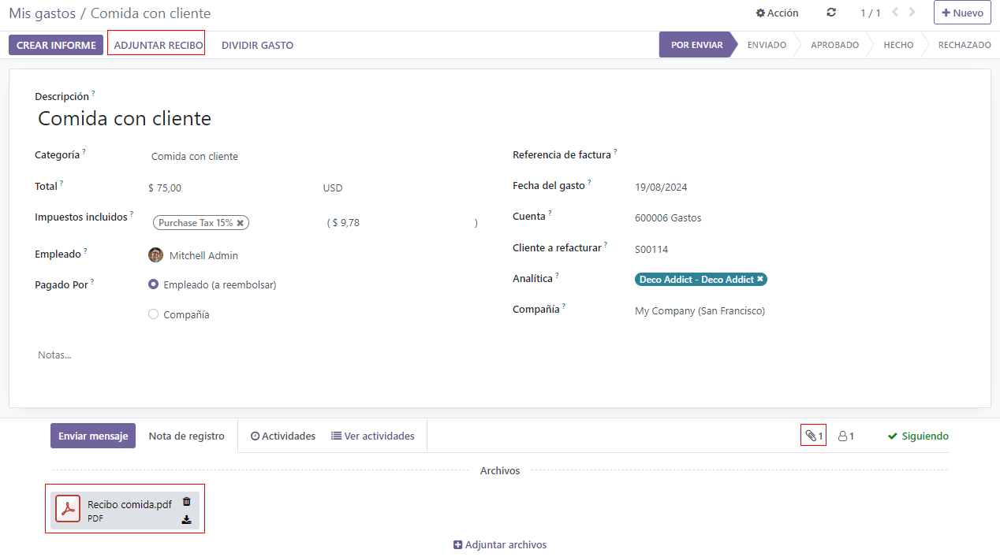Create new expenses from a scanned receipt¶
Rather than manually inputting all of the information for an expense, expenses can be created by scanning a PDF receipt.
First, in the main Expenses app dashboard view (this view can also be accessed from ), click Scan, and a file explorer pops up. Navigate to the receipt to be uploaded, click on it to select it, and then click Open.
The receipt is scanned, and a new entry is created with today’s date as the Expense Date, and any other fields it can populate based on the scanned data, such as the total. Click on the new entry to open the individual expense form, and make any changes needed. The scanned receipt appears in the chatter.
Automatically create new expenses from an email¶
Instead of individually creating each expense in the Expenses app, expenses can be automatically created by sending an email to an email alias.
To do so, first, an email alias needs to be configured. Go to . Ensure Incoming Emails is enabled.
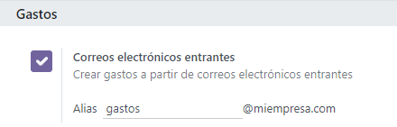Note
If the domain alias needs to be set up, Setup your domain alias will appear beneath the incoming emails check box instead of the email address field. Refer to this documentation for setup instructions and more information: Domain names. Once the domain alias is configured, the email address field will be visible beneath the incoming emails section.
Next, enter the email address to be used in the email field, and then click Save. Now that the email address has been entered, emails can be sent to that alias to create new expenses without having to be in the Odoo database.
To submit an expense via email, create a new email and enter the product’s internal reference code (if available) and the amount of the expense in the email subject. Next, attach the receipt to the email. Odoo creates the expense by taking the information in the email subject and combining it with the receipt.
To check an expense categories internal reference, go to . If an internal reference is listed on the expense category, it is listed in the Internal Reference column.
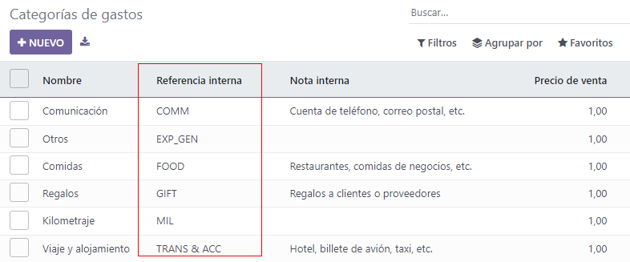Create an expense report¶
When expenses are ready to submit (such as at the end of a business trip, or once a month), an expense report needs to be created. Go to the main app dashboard, which displays a default My Expenses view, or go to .
Expenses are color coded by status. Any expense with a status of To Report (expenses that still need to be added to an expense report) the text appears in blue. All other statuses (To Submit, Submitted, and Approved) the text appears in black.
First, select each individual expense for the report by clicking the check box next to each entry, or quickly select all the expenses in the list by clicking the check box next to Expense Date.
Another way to quickly add all expenses that are not on an expense report is to click Create Report without selecting any expenses, and Odoo will select all expenses with a status of To Submit that are not already on a report.
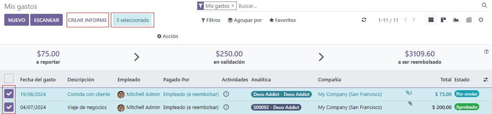Note
Any expense can be selected from the My Expenses list, regardless of status. The Create Report button is visible as long as there is a minimum of 1 expense with a status of To Report selected. When the Create Report button is clicked, only expenses with a status of To Submit that are not currently on another expense report will appear in the newly created expense report.
Once the expenses have been selected, click the Create Report button. The new report appears with all the expenses listed in the Expense tab. If there is a receipt attached to an individual expense, a 📎 (paperclip) icon appears next to the Customer to Reinvoice and Analytic Distribution columns.
When the report is created, the date range for the expenses appears in the Expense Report
Summary field by default. It is recommended to edit this field with a short summary for each report
to help keep expenses organized. Enter a short description for the expense report (such as Client
Trip NYC, or Repairs for Company Car) in the Expense Report Summary field. Next,
select a Manager from the drop-down menu to assign a manager to review the report. If
needed, the Journal can be changed. Use the drop-down menu to select a different
Journal.
If some expenses are not on the report that should be, they can still be added. Click Add a line at the bottom of the Expense tab. A pop up appears with all the available expenses that can be added to the report (with a status of To Submit). Click the check box next to each expense to add, then click Select. The items now appear on the report that was just created. If a new expense needs to be added that does not appear on the list, click New to create a new expense and add it to the report.

Note
Expense reports can be created in one of three places:
Go to the main app dashboard (also accessed by going to )
Go to
Go to
In any of these views, click New to create a new expense report.
Submit an expense report¶
When an expense report is completed, the next step is to submit the report to a manager for approval. Reports must be individually submitted, and cannot be submitted in batches. Open the specific report from the list of expense reports (if the report is not already open). To view all expense reports, go to .
If the list is large, grouping the results by status may be helpful since only reports that have a To Submit status need to be submitted, reports with an Approved or Submitted status do not.
The To Submit expenses are easily identifiable not just from the To Submit status, but the text appears in blue, while the other expenses text appears in black.
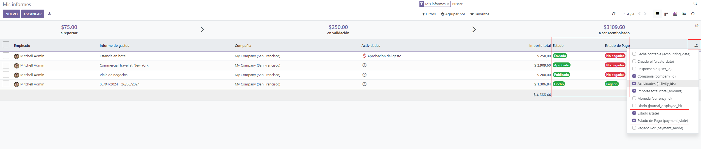Note
The status of each report is shown in the Status column on the right. If the Status column is not visible, click the Additional Options (two dots) icon at the end of the row, and enable Status.
Click on a report to open it, then click Submit To Manager. After submitting a report, the next step is to wait for the manager to approve it.
Important
The Approve expenses, Post expenses in accounting, and Reimburse employees sections are only for users with the necessary rights.
Approve expenses¶
In Odoo, not just anyone can approve expense reports— only users with the necessary rights (or permissions) can. This means that a user must have at least Team Approver rights for the Expenses app. Employees with the necessary rights can review expense reports, approve or reject them, and provide feedback thanks to the integrated communication tool.
To see who has rights to approve, go to the main app and click on Manage Users.
Note
If the Settings app is not available, then certain rights are not set on the account. Check the Access Rights tab of a user’s card in the app. the Administration section (bottom right of the Access Rights tab) is set to one of three options:
None (blank): The user cannot access the Settings app at all.
Access Rights: The user can only view the User’s & Companies section of the Settings app.
Settings: The user has access to the entire Settings app with no restrictions.
Please refer to this document to learn more about managing users and their access rights.
Click on an individual to view their card, which displays the Access Rights tab in the default view. Scroll down to the Human Resources section. Under Expenses, there are four options:
None (blank): A blank field means the user has no rights to view or approve expense reports, and can only view their own.
Team Approver: The user can only view and approve expense reports for their own specific team.
All Approver: The user can view and approve any expense report.
Administrator: The user can view and approve any expense report, as well as access the reporting and configuration menus in the Expenses app.
Users who are able to approve expense reports (typically managers) can easily view all expense reports they have access rights to. Go to , and a list appears with all expense reports that have a status of either To Submit, Submitted, Approved, Posted, or Done. Expense reports with a status of Refused are hidden in the default view.
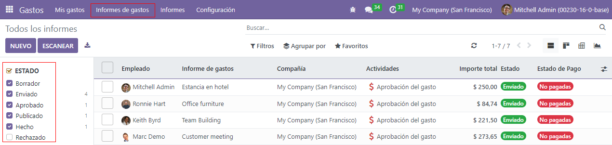When viewing expense reports, there is a panel of filters that can be enabled or disabled on the left side. The three categories that filters can be applied on are Status, Employee, and Company. To view only expense reports with a particular status, enable the specific status filter to display the expense reports with only that status. Disable the specific status filter to hide the reports with that status. To view expense reports for a particular employee and/or company, enable the specific employee name filter and/or company filter in the Employee and Company sections.
Reports can be approved in two ways (individually or several at once) and refused only one way. To approve multiple expense reports at once, remain in the list view. First, select the reports to approve by clicking the check box next to each report, or click the box next to Employee to select all the reports in the list.
Important
Only reports with a status of Submitted can be approved. It is recommended to only display the submitted reports by adjusting the status filter on the left side by only having the Submitted filter enabled.
If a report is selected that is unable to be approved, the Approve Report button will not appear, indicating there is a problem with the selected report(s).
Next, click the Approve Report button.
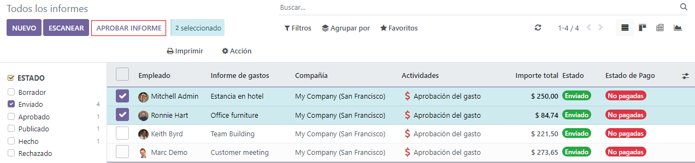To approve an individual report, click on a report to go to a detailed view of that report. In this view, several options are presented: Approve, Report in Next Payslip, Refuse, or Reset to draft. Click Approve to approve the report.
If Refuse is clicked, a pop-up window appears. Enter a brief explanation for the refusal in the Reason to Refuse Expense field, and then click Refuse.
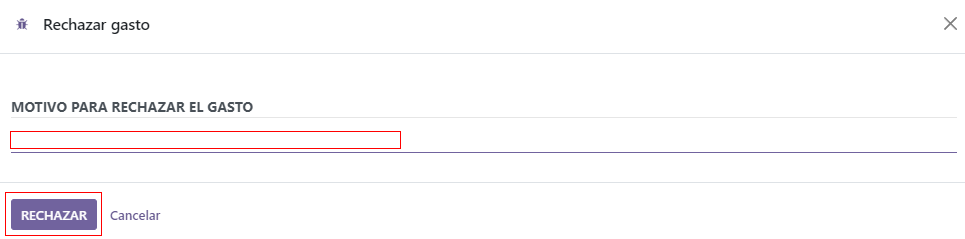Team managers can easily view all the expense reports for their team members. While in the Expense Reports view, click the drop-down arrow in the right-side of the search box, and click on My Team in the Filters section. This presents all the reports for the manager’s team.
Tip
If more information is needed, such as a missing receipt, communication is easy from the chatter. In an individual report, simply click Send message to open the message text box. Type in a message, tagging the proper person (if needed), and post it to the chatter by clicking Send. The message is posted in the chatter, and the person tagged will be notified via email of the message, as well as any followers.
The only people that can be tagged in a message are followers. To see who is a follower, click on the 👤 (person) icon to display the followers of the expense.
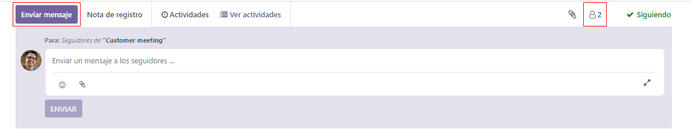Post expenses in accounting¶
Once an expense report is approved, the next step is to post the report to the accounting journal. To view all expense reports, go to . To view only the expense reports that have been approved and need to be posted, adjust the filters on the left side so that only the Approved status is enabled.
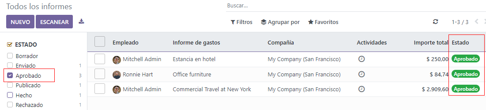Just like approvals, expense reports can be posted in two ways (individually or several at once). To post multiple expense reports at once, remain in the list view. First, select the reports to post by clicking the check box next to each report, or click the box next to Employee to select all the reports in the list. Next, click Post Entries.
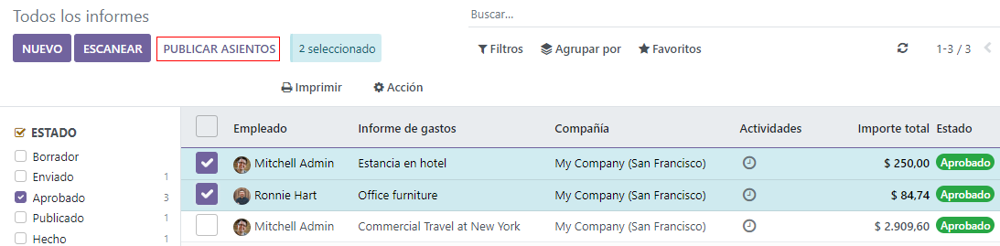To post an individual report, click on a report to go to the detailed view of that report. In this view, several options are presented: Post Journal Entries, Report In Next Payslip, Refuse, or Reset to Draft. Click Post Journal Entries to post the report.
If Refuse is clicked, a pop-up window appears. Enter a brief explanation for the refusal in the Reason to Refuse Expense field, and then click Refuse. Refused reports can be viewed by going to , then adjusting the filters on the left so that only Refused is selected. This will only show the refused expense reports.
Important
To post expense reports to an accounting journal, the user must have following access rights:
Accounting: Accountant or Adviser
Expenses: Manager
Reimburse employees¶
After an expense report is posted to an accounting journal, the next step is to reimburse the employee. To view all the expense reports to pay, go to .
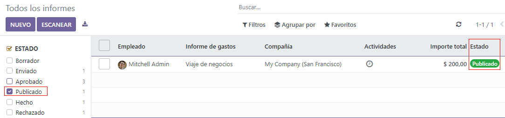Just like approvals and posting, expense reports can be paid in two ways (individually or several at once). To pay multiple expense reports at once, remain in the list view. First, select the reports to pay by clicking the check box next to each report, or click the box next to Employee to select all the reports in the list. Next, click Register Payment.
To pay an individual report, click on a report to go to a detailed view of that report. Click Register Payment to pay the employee.
A Register Payment pop-up appears, and the Journal, Payment Method, and Payment Date can be modified, if needed. When the selections are correct, click Create Payment to send the payment to the employee.
To pay an individual report, click on a report in the list view to go to a detailed view of that report. Click Register Payment to pay the employee. A Register Payment pop-up appears, but when paying an individual expense report instead of several at once, more options appear in the pop-up. In addition to the Journal, Payment Method, and Payment Date fields, a Recipient Bank Account, Amount, and Memo field appear. Select the employee’s bank account from the drop-down menu to directly deposit the payment to their account. When all other selections are correct, click Create Payment to send the payment to the employee.
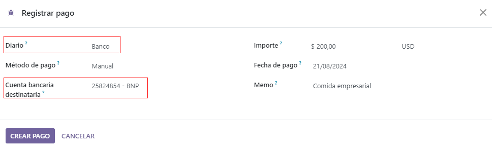Re-invoice expenses to customers¶
If expenses are tracked on customer projects, expenses can be automatically charged back to the customer. This is done by creating an expense, referencing the SO the expense should be added to, and then creating the expense report. Next, managers approve the expense report, and the accounting department posts the journal entries. Finally, once the expense report is posted to a journal, the expense(s) appears on the SO that was referenced. The sales order can then be invoiced, thus invoicing the customer for the expense.
Setup¶
First, specify the invoicing policy for each expense category. Go to . Click on the expense category to open the expense category form. Under the Invoicing section, click the radio button next to the desired selection for Re-Invoicing Expenses. Options are None, At cost, and Sales price.
Re-Invoicing Expenses:
None: Expense category will not be re-invoiced.
At cost: Expense category will invoice expenses at their real cost.
At sales price: Expense category will invoice the price set on the sale order.
Create an expense¶
First, when creating a new expense, the correct information needs to be entered in order to re-invoice a customer. Select the sales order the expense will appear on in the Customer to Reinvoice section, from the drop-down menu. Next, select the Analytic Account the expense will be posted to. After the expense(s) are created, the expense report needs to be created and submitted as usual.
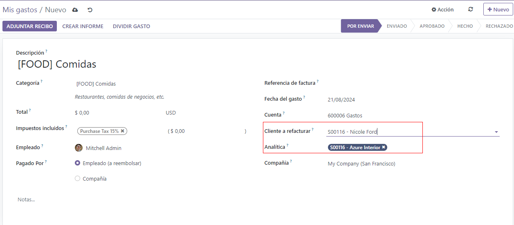Important
Selecting a Customer to Reinvoice when creating an expense is critical, since this is what causes the expenses to be automatically invoiced after an expense report is approved.
The Customer to Reinvoice field can be modified until an expense report is approved, then the field is no longer able to be modified.
Validate and post expenses¶
Only employees with permissions (typically managers or supervisors) can approve expenses. Before approving an expense report, ensure the Analytic Distribution is set on every expense line of a report. If an Analytic Distribution is missing, assign the correct account(s) from the drop-down menu, and then click Approve or Refuse.
The accounting department is typically responsible for posting journal entries. Once an expense report is approved, it can then be posted. The SO is only updated after the journal entries are posted. One the journal entries are posted, the expenses now appear on the referenced SO.
Invoice expenses¶
Once the SO has been updated, it is time to invoice the customer. After the expense report has been approved and the journal entries have been posted, click the Sales Orders smart button to open the SO. The expenses to be re-invoiced are now on the SO.
Note
More than one SO can be referenced on an expense report. If more than one SO is referenced, the Sales Orders smart button will list the number of SO’s. If multiple SO’s are listed, the Sales Orders smart button opens a list view of all the SO’s on the expense report. Click on a SO to open the individual SO.
The expenses are listed in the SO Order Lines tab.
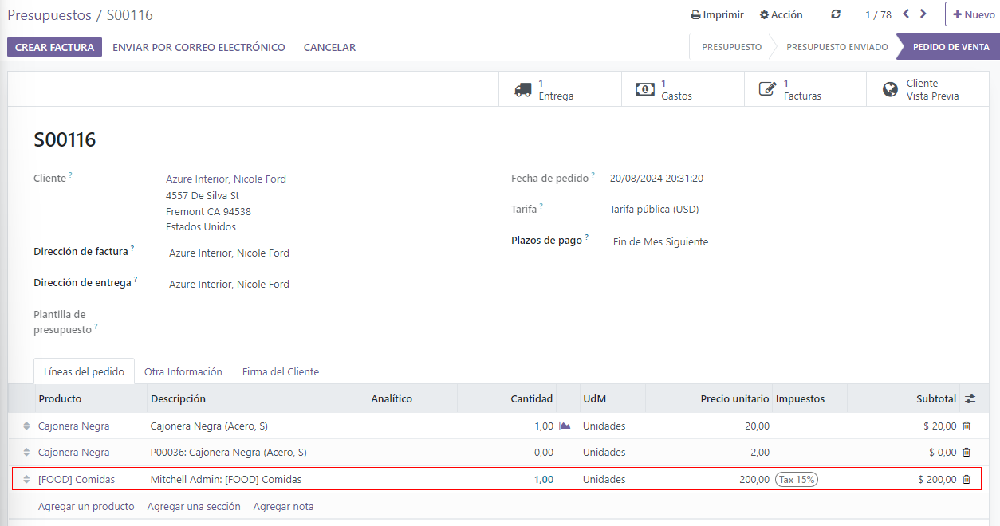Next, click Create Invoice, and select if the invoice is for a Regular invoice, a Down payment (percentage), or a Down payment (fixed amount) by clicking the radio button next to it. Then, click Create Invoice. The customer has now been invoiced for the expenses.